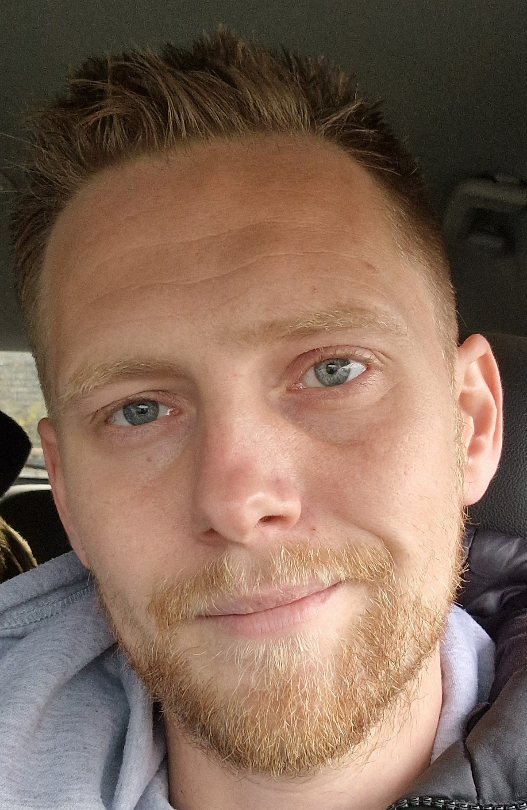

Curriculum Vitae

Personal Data
- Name: Dominik Salzmann
- Date of Birth: 16.Dec.1987
- Place of Birth: Dachau
- Nationality: Austria
Education
- since 08/2023: Employee at Flex Althofen, MES (Manufactoring Execution Systems)
- 06/2014 - 07/2023: Employee at B3-Netzwerk (Famalycare) (actual) chairman of the works council
- since 10/2013: Start: Master Psychology (actual)(long break due to work)
- 02/2010-07/2013: Bachelor of Science (Psychology) at Alpen Adria University Klagenfurt
- In depth: clinical psychology, group dynamics
- Bachelor thesis: Drugs and drug-induced psychoses in relation to comorbidity
- 2008: High school diploma BORG Klagenfurt
- 1999 - 2008: High school Lerchenfeld, BORG Klagenfurt
- 1998 - 1999: Secondary schools Wolfsberg
- 1994 - 1998: Elementary school St.Michael
Internships and Projects
- 08/2012 - 09/2012: pro mente Kärnten, Internship at: "Tageszentrum"
- 04/2014 - 07/2014: "Jugend in Aktion" employee Theme: "Hip-Hop dancing for social skill strengthening“; psychological study for EU founding project
Additional Qualifications
- 2013: NLP Compact
- 2013: NLP Practitioner
- 2014: NLP Master
- 2016: NLP Trainer
- 2016-2022: Various further training courses in social psychology and pedagogy
Additional Skills
- English: Good
- Software: MS-Office (Excel, Word, Powerpoint, Outlook, Access)
- Drivers licence: A, B